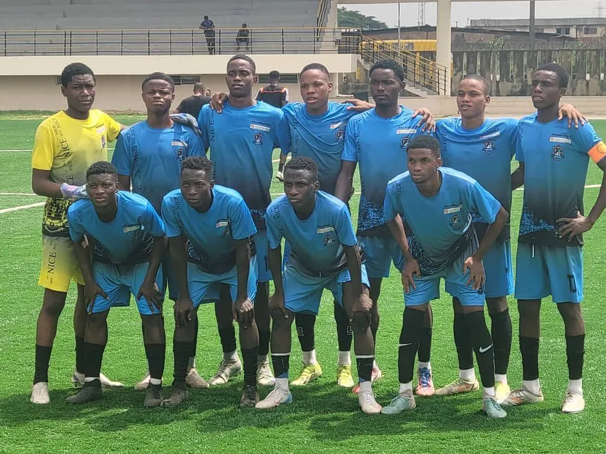

Formation
Académie : le FC Valen mise sur sa jeunesse avec un nouveau pôle à Anoumabo
Plus de 600 jeunes formés, et ce n'est qu'un début. Le club annonce l'extension de son académie : nouveaux terrains, suivi scolaire renforcé et détection dans tous les quartiers d'Abidjan…
Lire la suite À l'instant